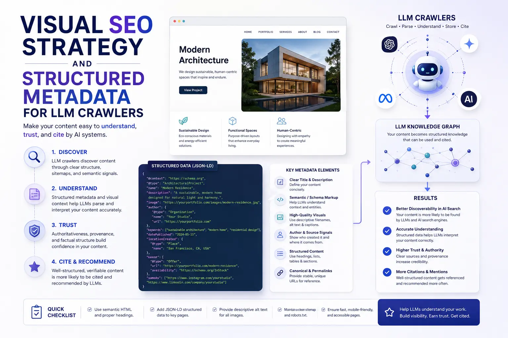
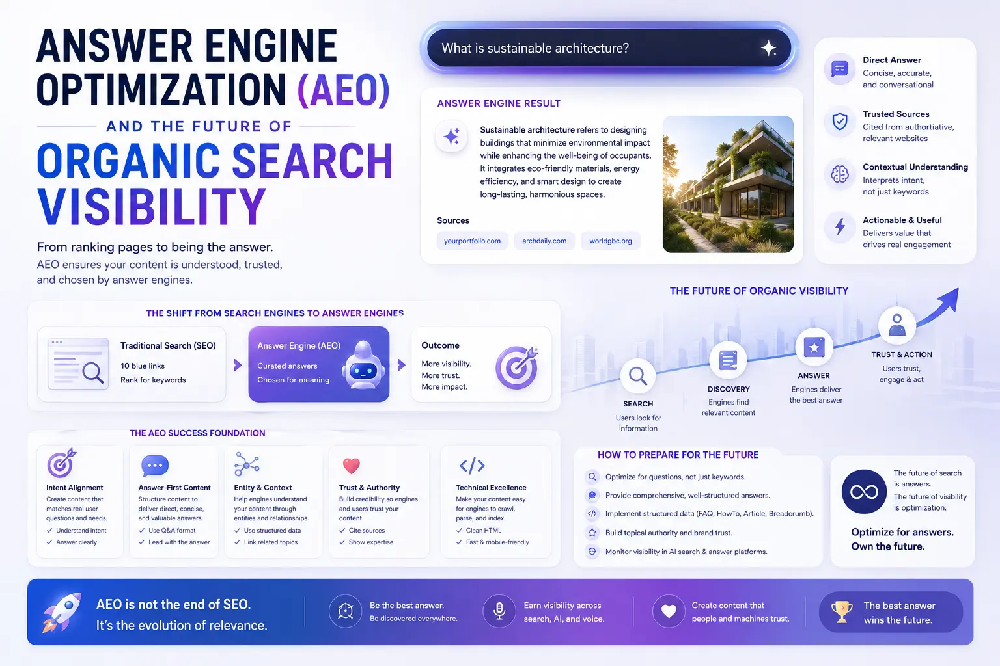

Architecting Your Creative Portfolio for Generative Engine Optimization (GEO)
The Search Landscape Has Fundamentally Changed
For over two decades, the primary objective of any portfolio website was to rank in Google's traditional ten-blue-link search results. Creative studios invested in keyword research, backlink campaigns, page speed optimisation, and content marketing — all designed to satisfy the algorithms that determined which pages appeared on page one of a standard search engine results page. That era is not ending — but it is being joined by an entirely new discovery channel that most creative businesses have not yet adapted to.
In 2026, a rapidly growing percentage of product and service discovery is happening through AI-powered search interfaces — ChatGPT search, Google Gemini, Perplexity AI, and a proliferating ecosystem of answer engines that generate synthesised responses rather than returning lists of links. When a potential client types "best product photography studio in Madurai" into one of these platforms, the AI does not return ten links — it returns a direct answer, often citing a single source or a small number of sources. The question for every creative studio is: will your portfolio be the source that the AI selects?
This is the domain of Generative Engine Optimization — the discipline of structuring your portfolio content, metadata, media assets, and page architecture so that large language models can discover, interpret, and cite your work. It is closely related to, but distinct from, traditional SEO — and studios that master it now will hold a significant competitive advantage as AI-powered search becomes the dominant discovery channel.
Understanding How AI Search Engines Discover and Select Sources
Before restructuring your portfolio for GEO, you need to understand how AI search engines — ChatGPT search, Google Gemini, and Perplexity AI — select which sources to cite in their generated responses. Building a robust Visual SEO Strategy for the AI era requires understanding these selection mechanisms:
- Structured clarity over keyword density. AI models evaluate content based on how clearly and specifically it answers a question — not on how many times a keyword appears. A page that provides a clear, structured, factual explanation of a specific topic will be preferred over a page that mentions the same keyword repeatedly without adding substantive information.
- Authorship and entity authority. AI models assess the trustworthiness of a source by evaluating the entity behind it — the organisation's online presence, its consistency across the web, its review quality, and its schema-declared credentials. A studio with a complete Google Business Profile, consistent NAP citations, and structured Organisation schema has stronger entity authority than one without.
- Machine-readable metadata. AI crawlers rely heavily on structured data — JSON-LD schema markup, descriptive alt text, semantic HTML heading hierarchies, and XML sitemaps — to parse and categorise content. Pages without structured metadata are significantly harder for AI models to interpret and therefore less likely to be cited.
- Freshness and activity signals. AI models prefer sources that demonstrate ongoing activity — recent publication dates, regularly updated content, and active engagement signals. A portfolio that was last updated two years ago will be deprioritised compared to one that publishes new case studies monthly.
ChatGPT Search Visibility
Ranking brand images in ChatGPT search requires descriptive alt text, JSON-LD ImageObject schema, keyword-rich filenames, and surrounding textual context that explains what each image represents and why it is authoritative.
Gemini Portfolio Setup
A complete Google Gemini SEO portfolio setup includes Organisation and LocalBusiness schema, structured service pages, FAQ markup, and geo-tagged visual assets that align with Google's entity-based ranking model.
Perplexity AI Optimisation
Effective Perplexity AI optimization for media requires clean HTML structure, comprehensive internal linking, descriptive heading hierarchies, and content that directly answers specific questions users ask about your services.
Future-Proof Visibility
Investing in the future of organic search visibility means building content architecture that serves both traditional search crawlers and the next generation of AI-powered discovery engines simultaneously.

Structuring Your Portfolio Pages for LLM Crawlers
The technical foundation of GEO is structured metadata for LLM crawlers — the machine-readable layer that tells AI models what your content is, who created it, where it applies, and why it is authoritative. Every portfolio page should include the following structured elements:
- JSON-LD Article and CreativeWork schema. Every case study, project page, and blog post should include Article schema with headline, description, author, publisher, datePublished, dateModified, and image properties. For portfolio pieces, use CreativeWork schema to specify the type of work, the client (if permitted), and the services delivered.
- ImageObject schema for every portfolio image. Each image in your portfolio should have associated ImageObject schema that specifies the image's name, description, content URL, creator, and upload date. This is the single most important factor for Ranking brand images in ChatGPT search — without it, AI models cannot reliably identify what your images depict or attribute them to your studio.
- FAQPage schema for service pages. Every service page — product photography, brand videography, corporate video production — should include FAQPage schema with 3-5 questions and answers that address the specific queries potential clients ask. This is the core of Answer Engine Optimization (AEO) — making your content the definitive answer to specific, high-intent questions.
- LocalBusiness schema with complete attributes. Your studio's LocalBusiness schema should include your business name, address, phone, email, service areas, opening hours, and service categories. This structured entity data strengthens your studio's identity in AI knowledge graphs and improves local relevance signals.
- Semantic HTML heading hierarchy. Use a single H1 per page with a clear, descriptive headline. Structure sub-sections with H2 and H3 tags that reflect the logical content hierarchy. AI crawlers use heading structure to parse topic relationships and determine which sections of a page are most relevant to specific queries.
- XML sitemap with image and video entries. Extend your XML sitemap to include image-specific entries (using Google's image sitemap extension) and video entries (using video sitemap markup) so that AI crawlers can discover and index your media assets directly without relying on on-page discovery alone.
Building a Google Gemini SEO Portfolio Setup
Google Gemini represents the integration of generative AI directly into Google's search ecosystem. Achieving a strong Google Gemini SEO portfolio setup requires aligning your portfolio with Google's entity-based understanding model:
Entity Establishment
- Ensure your studio has a complete, verified Google Business Profile with consistent NAP data across all web properties.
- Build a dedicated About page with Organisation schema that clearly defines your studio's name, founding date, location, founders, and services.
- Maintain consistent entity references across your website, social profiles, directory listings, and press mentions.
- Create a Google Knowledge Panel claim (if eligible) to establish your studio as a recognised entity in Google's knowledge graph.
Content Authority Signals
- Publish detailed, expert-level blog content that demonstrates deep domain expertise in your service categories.
- Include author attribution on all content with linked author profiles that demonstrate credentials and expertise.
- Build topical authority by publishing clusters of related content — multiple articles covering different aspects of a core topic.
- Earn genuine backlinks and mentions from industry publications, local press, and authoritative directories.
Media Asset Optimisation
- Tag all portfolio images with descriptive filenames, comprehensive alt text, and JSON-LD ImageObject schema.
- Upload high-quality project videos with VideoObject schema that includes name, description, thumbnail, upload date, and duration.
- Geo-tag visual assets with EXIF coordinates and location-specific captions to strengthen local relevance.
- Ensure all media assets are accessible via your XML sitemap and are not blocked by robots.txt or meta directives.
Answer Engine Optimization: Making Your Portfolio the Definitive Answer
Answer Engine Optimization (AEO) is the most actionable subset of GEO for creative studios. While GEO encompasses the full range of AI-search optimisation, AEO focuses specifically on making your content the answer that AI models select when users ask specific questions about your services or industry:
- Identify the questions your ideal clients ask. Research the specific questions potential clients type into AI search tools — "How much does a product photoshoot cost in Madurai?", "What should I prepare for a brand video shoot?", "How long does a lookbook production take?" Build dedicated content that answers each question directly, specifically, and authoritatively.
- Structure answers in question-answer format. Use H2 or H3 headings formatted as questions, followed by clear, concise answers in the first 2-3 sentences of the section. AI models extract answers from content that follows this pattern more reliably than from narrative prose that buries the answer in the middle of a paragraph.
- Add FAQPage schema to every answer. Wrap every question-answer pair in FAQPage JSON-LD schema so that AI crawlers can identify the Q&A structure programmatically. This structured layer is what differentiates your content from competing pages that may contain the same information but in an unstructured format.
- Include specific, verifiable facts. AI models prefer answers that include specific data points, named locations, measurable outcomes, and verifiable credentials over generic marketing language. State your studio's specific capabilities, turnaround times, pricing frameworks, and service areas rather than making broad, unsubstantiated claims.

Optimising for Perplexity AI and Emerging Platforms
Beyond Google Gemini and ChatGPT search, platforms like Perplexity AI represent a growing category of AI-native search tools that prioritise source quality, citation clarity, and structured content. Effective Perplexity AI optimization for media requires the same foundational elements — structured metadata, clean HTML, descriptive headings, and authoritative content — but with particular attention to citation-friendly formatting. Perplexity AI explicitly cites its sources, so your content must be structured in a way that makes it easy for the model to extract a clear, attributable statement.
This means every key claim on your portfolio should be supported by specific evidence, structured in short, self-contained paragraphs that can be extracted and cited independently. The future of organic search visibility belongs to content that is not only discoverable but citable — content that AI models can confidently reference as the authoritative source for a specific answer.
Conclusion
Generative Engine Optimization is not a future concern — it is a present requirement for creative studios that want to remain discoverable as AI-powered search becomes the dominant discovery channel. Building a robust Visual SEO Strategy for the AI era requires structured metadata, machine-readable content architecture, and a deliberate focus on Answer Engine Optimization (AEO).
By implementing structured metadata for LLM crawlers, optimising for Ranking brand images in ChatGPT search, building a complete Google Gemini SEO portfolio setup, and preparing for Perplexity AI optimization for media, studios can position themselves at the front of the future of organic search visibility.
At The PhD Ads, we architect creative portfolios for the AI search era — building the structured metadata, schema markup, content architecture, and media optimisation systems that ensure your studio is discovered, cited, and selected by the next generation of search engines.
Key Topics
Future-Proof Your Portfolio for AI Search
At The PhD Ads, we build GEO-optimised creative portfolios — structured metadata, schema markup, and content architecture designed to rank in ChatGPT search, Google Gemini, and Perplexity AI.
Email: team@e2o.in